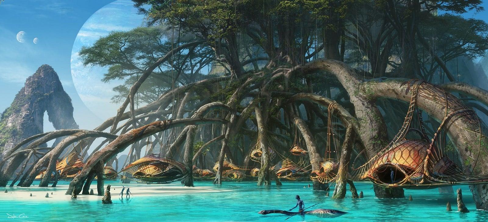

O mundo aquático dos Metkayina.
Os oceanos de Pandora aparecem com destaque em Avatar: O Caminho da Água. Eles mostram recifes, criaturas marinhas gigantes e uma nova cultura Na’vi.
O povo Metkayina vive próximo ao mar e possui uma forte ligação com as criaturas aquáticas e com Eywa.
